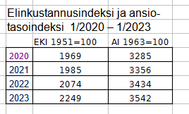

Tehtäviä osaan MAB6
Contents
Tehtäviä osaan MAB6#
Laske ensin kukin tehtävä itse, katso vasta sen jälkeen vastaus ja malliratkaisu
Prosenttilaskut#
1.1 Puseron hinta oli 55 euroa. Alennusmyynnissä hintoja alennettiin 30%. Mikä oli alennuksen suuruus ja alennettu hinta?
Vastaus: Alennus oli 16.50, alennettu hinta 38.50.
Ratkaisu:
Alennus: \( 0.3\cdot 55 = 16.50\)
Alennettu hinta: Tapa1: \(55- 16.50 = 38.50\)
Tapa2: \( 0.7\cdot 55 = 38.50\)
1.2 Ruotsissa E10 bensiinin litrahinta on 1.74€, Suomessa 1.97€. Kuinka monta prosenttia Ruotsin hinta on pienempi kuin Suomen hinta?
Vastaus: 11.7% pienempi
Ratkaisu:
Tapa1: Hintaeroa verrataan Suomen hintaan: \( \frac {1.97-1.74}{1.97}\cdot 100\% = 11.7\%\)
Tapa2: Lasketaan hintojen suhde \( \frac {1.74}{1.97} = 0.883\), joka on 11.7% pienempi kuin 1
1.3 Sähkön hinta nousi 50% ja laski sen jälkeen 40%. Kuinka monta prosenttia hinta eroaa alkuperäisestä?
Vastaus: Hinta on laskenut 10% alkuperäisestä
Ratkaisu:
Lasku kannattaa suorittaa käyttämällä korkokertoimia 1.5, 0.6
Alkuperäinen hinta x on 1. muutoksen jälkeen 1.5x ja 2. muutoksen jälkeen (0.6*1.5) x = 0.9 x
Hinta on siten 90% alkuperäisestä eli laskenut 10 %
1.4 Ari sai 60 euron korotuksen kuukausipalkkaansa. Korotusprosentti oli 3.0%. Mikä oli Arin alkuperäinen palkka?
Vastaus: Alkuperäinen palkka oli 2000 euroa/kk
Ratkaisu:
Palkankorotuksen 60 suhde alkuperäiseen palkkaan x on 3:100
Saadaan verranto \(\frac{60}{x} = \frac{3}{100}\), josta ristiin kertomalla saadaan
3x=60100 ,
josta x = 60100/3 = 2000
1.5 Autotallin vuokra, joka on nyt 100 euroa kk:ssa, nousee 2.0% vuodessa. Mikä on vuokra 10v kuluttua?
Vastaus: 121.9
Ratkaisu:
Nousu 10 vuodessa ei ole 20% vaan enemmän, koska korotus lasketaan aina edellisestä tasosta.
Käyttämällä toistuvasti kerrointa 1.02, saadaan yhdistetty korkokerroin \(1.02^{10} =1.219\)
1.6 Auton arvo laskee 20% vuodessa. Kuinka monta prosenttia se laskee 10 vuodessa?
Vastaus: 89.3%
Ratkaisu:
Korkokerroin, jolla seuraavan vuoden arvo saadaan edellisestä on 0.8.
Käyttämällä kerrointa 10 kertaa, saadaan yhdistetty korkokerroin \(0.8^{10} = 0.107\)
Arvosta on siten jäljellä 10.7% eli arvo on pudonnut 89.3% alkuperäisestä.
Verotus#
2.1 Maijan verokirjan perusprosentti on 20%, tuloraja 2100 eur/kk ja lisäprosentti 32%. Maija saa helmikuussa palkkaa 2430 euroa. Kuinka paljon häneltä peritään tuloveroa?
Vastaus: 525.50 €
Ratkaisu:
Tulo ylittää 2100 euron rajan, joten vero = 20 prosenttia 2100:sta + 32 prosenttia 2100:n ylittävästä osasta:
\(vero = 0.2\cdot 2100 + 0.32\cdot (2430-2100) = 525.50\)
2.2 Laske valtionvero 32000 euron vuosituloista
Vastaus: 1502 €
Ratkaisu:
Tulo kuuluu veroluokkaan 26400-43500 , jossa alarajavero on 536 ja marginaaliveroprosentti 17.5%
\(vero = 536 + 0.1725*(32000-26400) = 1502\)

2.3 Pesukoneen verollinen myyntihinta on 420 euroa. Laske ALV:n osuus ja veroton hinta.
Vastaus: ALV = 81.29 €, veroton hinta 338.71 €
Ratkaisu:
Pesukoneen ALV prosentti on 24% verottomasta hinnasta.
Verollisesta myyntihinnasta laskettaessa kannattaa käyttää kerroint 24/124
\(ALV = 24/124\cdot myyntihinta = 24/124\cdot 420 = 81.29 \)
\(veroton hinta = 100/124\cdot myyntihinta = 100/124\cdot 420 = 338.71 \)
2.4 Tapio saa 4000 euron talletukselle 4.0 % vuotuisen koron, joka lisätään vuosittain pääomaan. Mikä on nettokorko verojen jälkeen? Mikä on talletuksen arvo 5 vuoden kuluttua?
Vastaus: Nettokorko on 2.8%, talletuksen arvo lopussa on 4592 €
Ratkaisu:
Koroista maksettava pääomavero on 30%, joten veroton korko on 0.70*4.0% = 2.8%. Korkokerroin on siten 1.028.
Talletuksen arvo 5 v kuluttua on \(4000*1.028^5 = 4592\) €
2.5 Kuinka paljon lahjan saaja säästää veroissa, jos 60000 euron kertalahjoituksen sijasta lahjoitettaisiin 20000 euroa kolmena vuonna peräkkäin?
Vastaus: verosäästö on 4000 €
Ratkaisu:
60000 € kertalahjan vero on 11400 + 0.29 (60000-55000) = 12850
20000 € lahjasta vero on 100 + 0.19 (20000-5000) = 2950 joka kerrottuna kolmella on 8850
Lahjan jakamisella osiin säästyy 4000 euroa.

Indeksit#
Kuvassa on elinkustannus- ja ansiotasoindeksit tammikuusta 2020 tammikuuhun 2023

3.1 Kuinka monta prosenttia elinkustannukset nousivat tammikuusta 21 tammikuuhun 23? Kuinka monta prosenttia nousivat palkkatulot samalla aikavälillä?
Vastaus: Elinkustannukset nousivat 13.3% , ansiot 5.5%
Ratkaisu:
Elinkustannusindeksien suhde on 2249/1985 = 1.133, mikä tarkoittaa 13.3% nousua (1+13.3/100 = 1.133)
Ansioindeksien suhde on 3542/3356 = 1.0554, eli ansiot ovat nousseet 5.5 %
3.2 Oletaan, että ansiot nousevat 5.5% ja elinkustannukset 13.3%. Montako prosenttia laskee rahan arvo? Montako prosenttia laskevat reaaliansiot?
Vastaus: Rahan arvo alenee 11.7%, reaaliansiot alenevat 6.9%
Ratkaisu:
Rahan arvolla tarkoitetaan käytössä olevan rahamäärän suhdetta hintoihin.
Jos rahan arvon on aluksi a, niin hintojen noustua 13.3% se on a/1.133 = 0.883 a eli 11.7% pienempi.
Reaaliansioiden korkokerroin on palkkojen korkokerroin/hintojen korkokerroin = 1.055/1.133 = 0.931 ,
joka tarkoittaa 6.9 % laskua.
(korkokerroin 1 + p/100 = 0.931 => p/100 = 0.931-1 = 0.069 => p = 6.9%)
Sarja (1.42, 1.60, 1.77, 2.23, 2.05) kuvaa bensan keskihintoja vuosina 2018-2022. Muodosta niistä indeksisarja perusvuotena 2018. Mikä on viimeisen vuoden 2022 indeksiluku?
Vastaus: Vuoden 2022 indeksi on 114.4 (koko sarja on 100, 112.7, 124.6 , 157.2 , 144.4)
Ratkaisu:
v.2022 indeksi lasketaan seuraavasti: 2.05/1.42*100 = 144.4
Valuutat#

4.1 Olet menossa Japaniin ja ostat Nordea-pankista 100 000 jeniä matkavaluuttaa. Paljonko joudut maksamaan euroina?
Vastaus: 680.45 €
Ratkaisu:
Pankki myy Japanin valuuttaa, eli on käytettävä Jenin myyntikurssia 146.96.
Maksu euroina on 100000/146.96 = 680.45 €
(voi ajatella myös verrantona: \(\frac{x}{100000}=\frac{1}{146.96}\))
4.2 Vaihdat Ruotsinlaivalla 500 euroa kruunuiksi. Montako kruunua saat? Käytä Nordean kursseja.
Vastaus: 680.45 €
Ratkaisu:
Valuuttapiste myy Ruotsin kruunuja, eli on käytettävä myyntikurssia 11.358.
1 euro = 11.358 SEK => 500 euroa = 500*11.358 SEK = 5679 SEK
4.3 Lontoossa opiskeleva Mari maksaa kesällä 300 GBP:n vuokran suomalaiselta pankkitililtä. Montako euroa hänen pitää maksaa?
Vastaus: 355.54 €
Ratkaisu:
Pankki myy puntia, eli on käytettävä punnan myyntikurssia 0.8438.
Maksu euroina on \(300/0.8438 = 355.54 \) €
4.4 Hannulle jää kalareissulta 600 NOK käyttämättä ja hän vaihtaa ne Rovaniemellä euroiksi. Paljonko hän saa?
Vastaus: 49.90 €
Ratkaisu:
Pankki ostaa Norjan kruunuja ja käyttää ostokurssia 12.025.
Hannu saa kruunuista \(600/12.025 = 49.90 \) €
Korko (lyhyet alle vuoden lainat)#
5.1 Satu ottaa 400 euron pikavipin, jonka laina-aika on 90 vrk ja korko 12%? Mikä on eräpäivänä takaisin maksettava summa?
Vastaus: 411.84
Ratkaisu:
Yksinkertaisen korkolaskun kaava K = k (1 + i t) , missä
lainamäärä k = 400, korko i = 0.12 ja aika t = 90/365.
Takaisin maksettava summa \(K = 400 (1 + 0.12\cdot 90/365) = 411.84\)
5.2 Panttilainaamo antaa Samille lainan, jonka laina-aika on 4 kk, korko 12%. Tässä lainassa takaisinmaksettava summa on 300 euroa. Korko maksetaan etukäteen lainanottohetkellä. Paljonko Sami saa käteen?
Vastaus: 288.46
Ratkaisu:
Kaavasta K = k (1 + i t) ratkaistaan summan K = 300 nykyarvo k muodossa k = K/(1 + i t)
Sami saa käteen summan \(k = 300 / (1 + 0.12\cdot 4/12) = 288.46\)